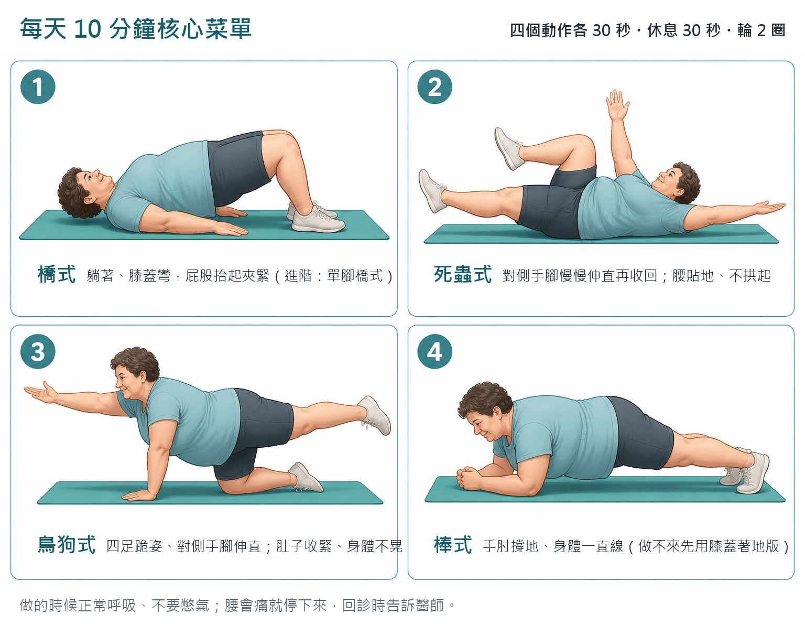
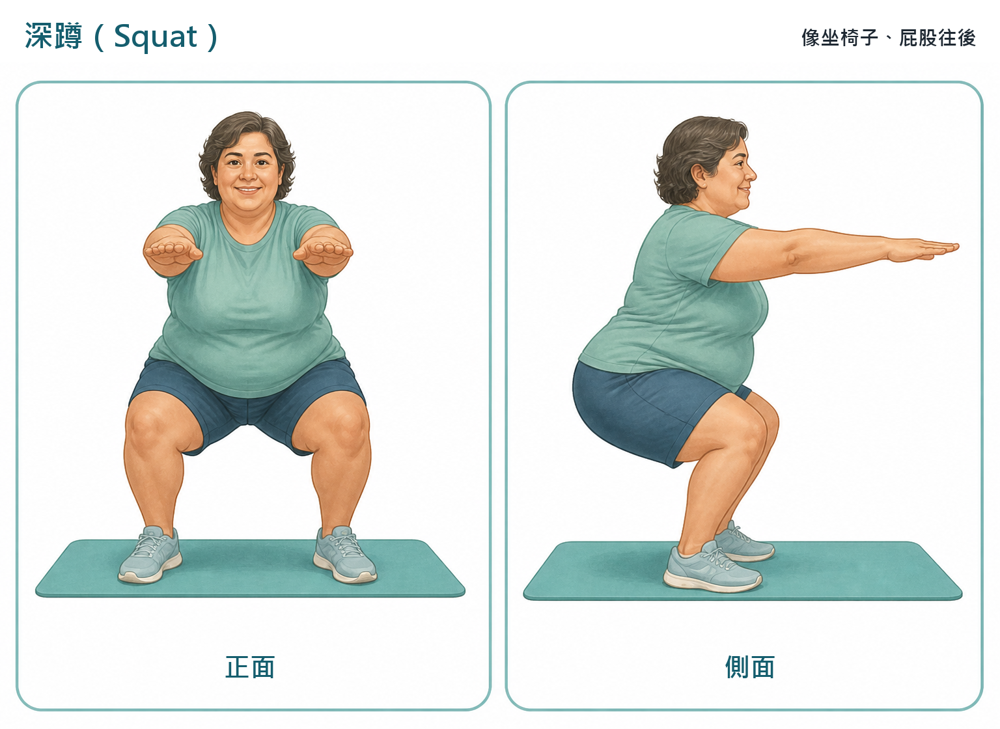
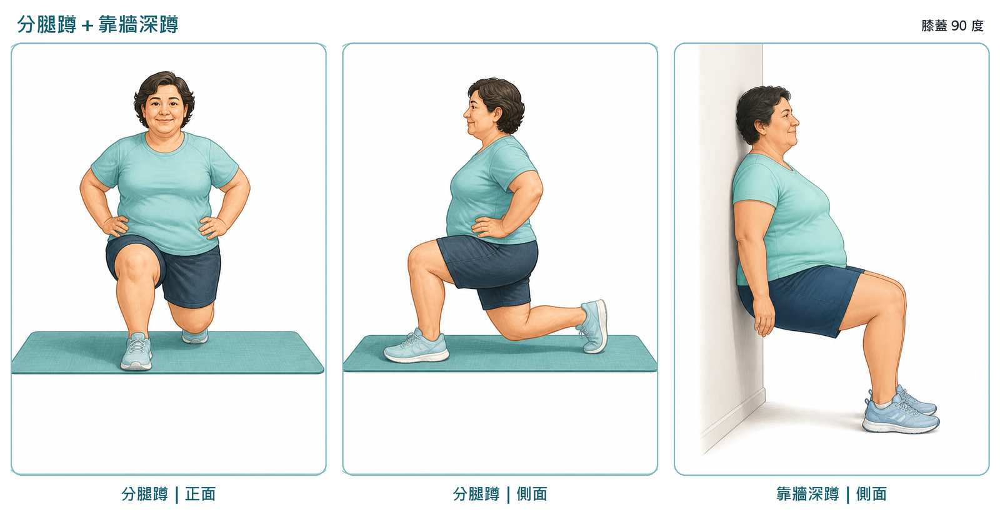
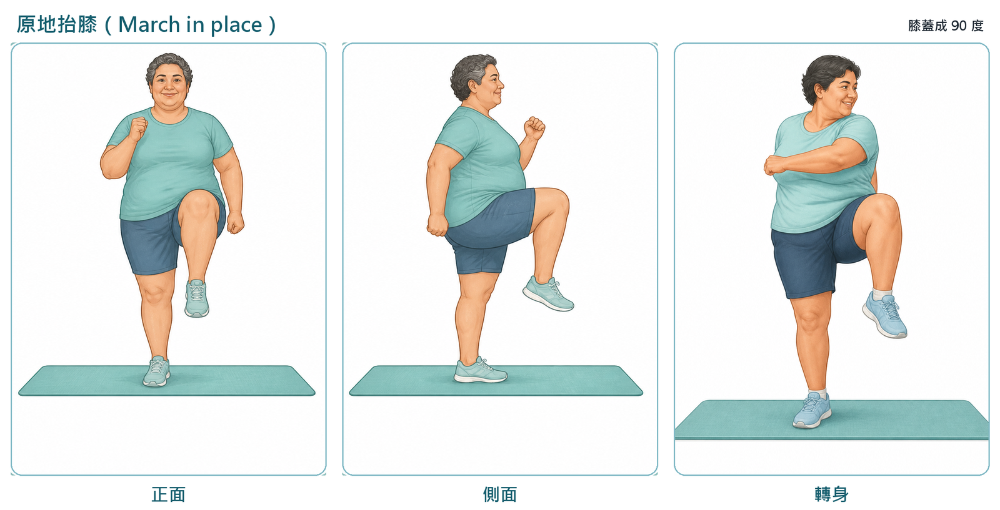
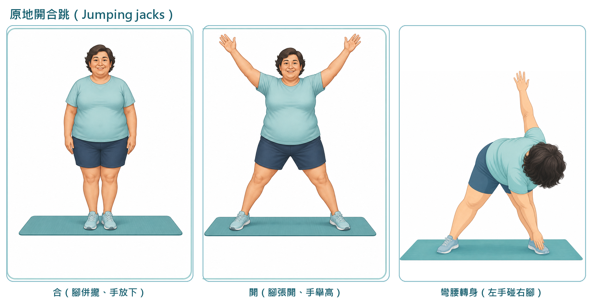
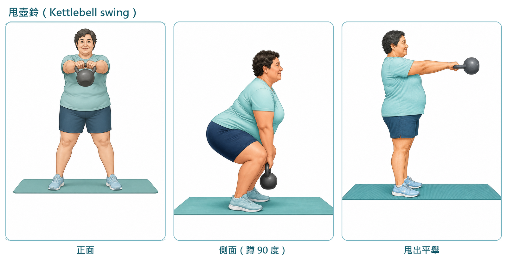

第⑤章 動：不是苦練，是動得對
適用：一般成年民眾。第③章說運動是守護者——這一章給做得到的起步法，零基礎也行。
狀態：已審定（2026-08-26 醫師審稿通過；5-5 含 2026-08-24 修訂後複審）。
本章想讓讀者帶走的三句話
- 運動不是懲罰，是保住肌肉的方法——肌肉在，代謝在，瘦下來才守得住。
- 起點只有一個：每天走路 30 分鐘，可以拆成 3 次、每次 10 分鐘。
- 一週兩次肌力運動，在家徒手就能做，不用健身房。
5-1 從走路開始（每 10 個人有 6 個沒有運動習慣）
如果你已經很久沒運動——你不孤單，我們門診每 10 個人有將近 6 個和你一樣。所以起點不是跑步、不是健身房，是走路：每天 30 分鐘，可以拆成 3 次、每次 10 分鐘；不用流汗喘吁吁，走得到、走得久，比走得快重要。先連續做兩週，讓「每天有動」變成習慣，再談強度。
出處：本院 270 份問卷（僅引比例）＋病人版運動介入第一階段（醫師審定 2026-08-22）
5-2 有氧的目標：每週 150 分鐘，「會喘、還能講話」
習慣養成後，把量往上加：目標是每週累積 150 分鐘中等強度有氧——大約是每天快走 30 分鐘、一週 5 天。「中等強度」怎麼抓？會喘，但還能講話；能講話，但唱不了歌。快走、騎腳踏車、游泳、跳舞都算，挑你不討厭的那一種，才做得久。
出處：WHO 身體活動指引／國健署全民身體活動指引
5-3 肌力運動每週 2 次：在家就能做
這是多數人漏掉、卻最關鍵的一塊。減重時不練肌力，瘦掉的體重有一部分是肌肉——引擎變小，之後更容易復胖。每週 2 次、每次 15–20 分鐘，在家徒手就夠：
- 椅子起立：從椅子站起來再坐下，10 下一組，做 2–3 組（就是最實用的深蹲）
- 扶椅深蹲：屁股往後坐、膝蓋不超過腳尖
- 橋式：躺著抬屁股，練核心和臀腿
- 彈力帶划船：練背，姿勢比重量重要
隔天肌肉痠是正常的，代表有練到；痛在關節才要停。
出處：WHO 肌力訓練建議＋病人版低衝擊肌力模組（醫師審定 2026-08-22）
5-4 把活動藏進生活
沒有完整 30 分鐘？零碎的動加起來也很可觀：能走樓梯就不搭電梯、提早一站下車、講電話時站起來走、追劇時邊看邊踏步。這些「不像運動的活動」一整天累積下來，消耗不輸一次正式運動——對「就是討厭運動」的人，這是最好的起點。
出處：能量消耗組成通則（病人版醫師審定 2026-08-22）
5-5 膝蓋不好、體重較重，怎麼動才安全？
膝蓋會痛，不代表不能動——是換一種動法。體重較重或膝蓋退化的人，先避開跑跳，在家就能做這四類：
- 大腿肌力：扶著椅背做正確深蹲——屁股往後坐、膝蓋不超過腳尖
- 椅上運動：坐在椅子上輪流伸直膝蓋抬腿，練大腿、不壓膝蓋
- 地板核心：橋式——躺著抬屁股，練核心和臀腿
- 站立平衡：扶牆單腳站，練平衡防跌倒
每天挑兩樣，各做 10 下、2–3 回合。記住：大腿有力，就是膝蓋最好的護膝。 練肌力不是傷膝蓋，是保護膝蓋。
出處：病人版 S1-E3 低衝擊肌力模組（醫師審定 2026-08-22）＋退化性關節炎運動通則
5-6 動作圖解：照著圖做
下面六張圖卡，把本章的動作畫給你看——同一位主角示範，跟著做就對了。前三張是肌力（每週 2 次），後三張是讓心跳加快的原地運動（湊你的每週 150 分鐘）。共同原則：正常呼吸、不要憋氣；關節會痛就停下來，回診時告訴醫師。






出處：本院運動衛教圖卡（醫師審定 2026-09-10）